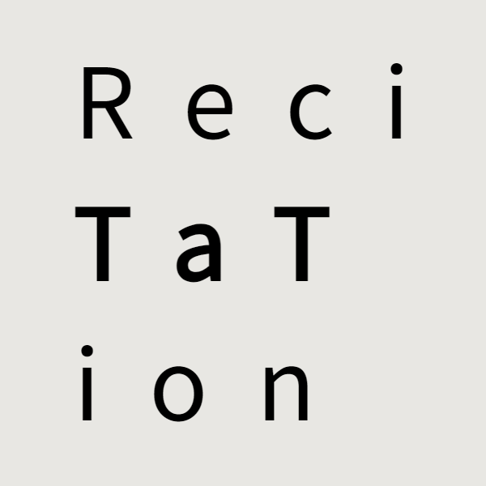

嗨！欢迎来到
waterblock79
的小站
这是一名居住在
北京
的
高中生
，Scratcher，会一些前端开发，偶尔玩玩游戏，挺喜欢听歌的。
使用并学习着：
HTML/CSS
、
Javascript
+
Typescript
、
Vue.js
、
Python
。
一些项目和作品

ReciTaTion
古诗文背诵辅助工具
Aerfaying Explore
一个开源脚本，为阿儿法营/稽木世界社区提供了一些优化、补丁及小功能来提升社区内的探索效率和用户体验。
博客
Scratch 中的非线性移动和构造等比数列
用构造等比数列的方法探究 Scratch 中的非线性移动
2024-05-05
Scratch
学习
2020 年至今的 A 营：见证一个 Scratch 社区的兴衰
记录和分析 Scratch 社区阿儿法营（A 营）的发展历程
2024-03-24
Scratch
Zinc Engine 指南
Zinc Engine - Scratch 原生的 UI 渲染引擎
2024-02-17
Scratch
看游戏“防沉迷”机制
中国的游戏“防沉迷”机制愈加严格，从一个未成年游戏玩家的角度来聊一聊“防沉迷”的发展和我对它的看法。
2023-10-21
跨年游戏剪辑
2019、2020、2021 这三年年末跨年的时候都做了个游戏的剪辑视频，当时还是小学和初中，现在似乎也没时间和那种热情了，放在博客纪念一下（
2023-08-03
高中信息技术必修一知识整理
高中信息技术必修一的（大部分）核心知识整理
2022-10-14
学习
在 Scratch 中使用列表管理图层
简单解析 Scratch 图层机制，并在列表来更加清晰的管理角色间的图层关系！
2022-10-01
Scratch
浏览器 Data 协议的应用
介绍了浏览器中的 data 协议使用方法。
2022-09-29
前端
高中物理必修一运动学相关公式及推导整理
学习高中物理科目必修一的第一、二单元的一些学习心得和记录
2022-07-21
学习
Windows Subsystem for Android 体验
关于 Windows SubSystem fir Android （Windows 下的 Android 子系统，可在 Windows 中运行 Android 应用）的体验 & 安装和配置教程。
2021-10-24
Windows
Android
给你的华为设备刷入类原生&ROOT
一篇比较简洁的华为手机刷机教程，适合新手入门。
2021-10-23
Android
HTML5 WebSocket的原理及聊天室应用
介绍了 Websocket 的原理、用法，并提供了一个聊天室的例子。
2020-10-28
花10分钟，搭建你自己的博客
使用 Hexo 搭建你自己的博客。
2020-07-13
好东西